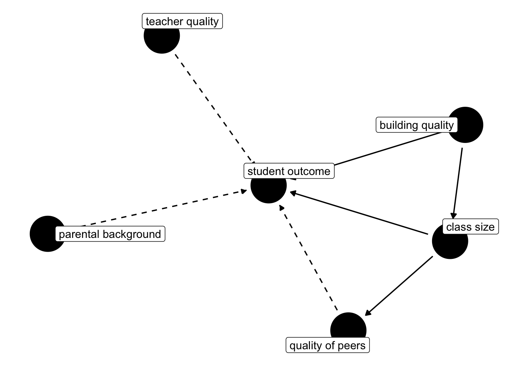
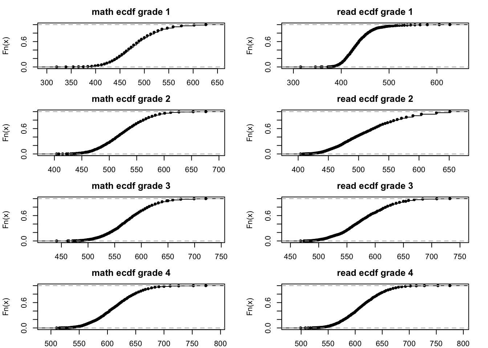
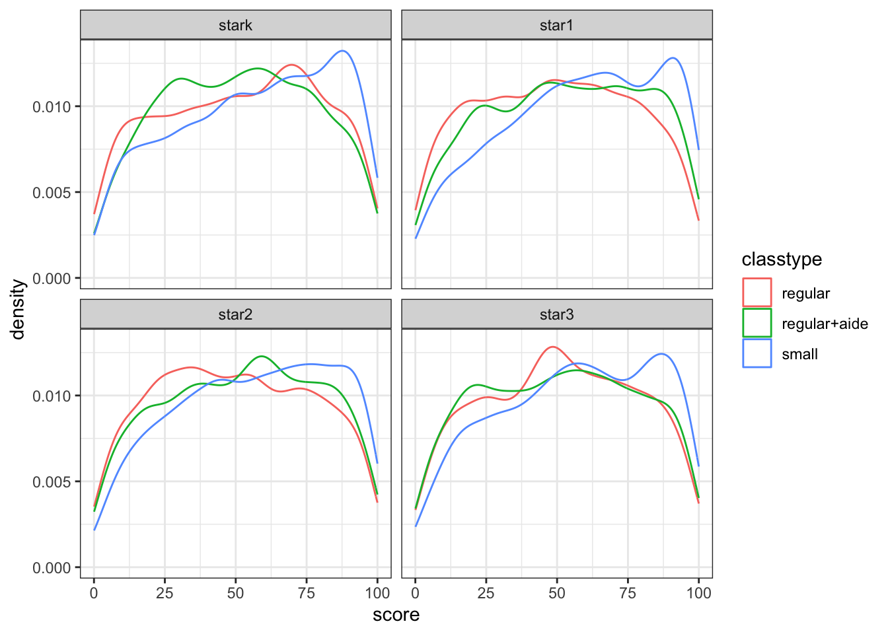
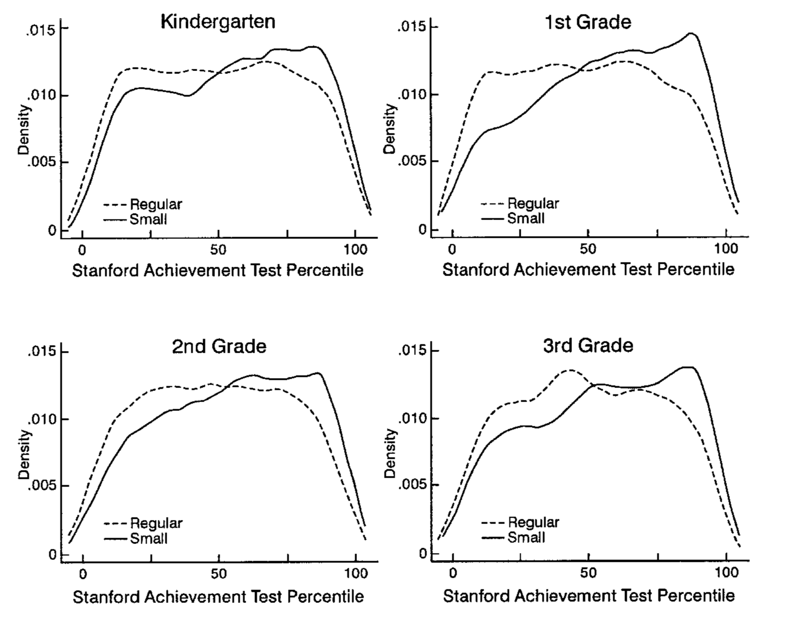
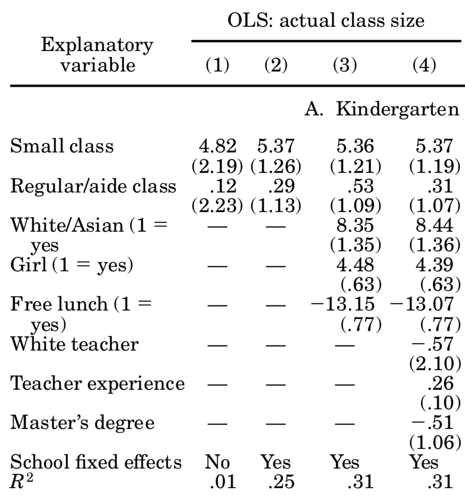
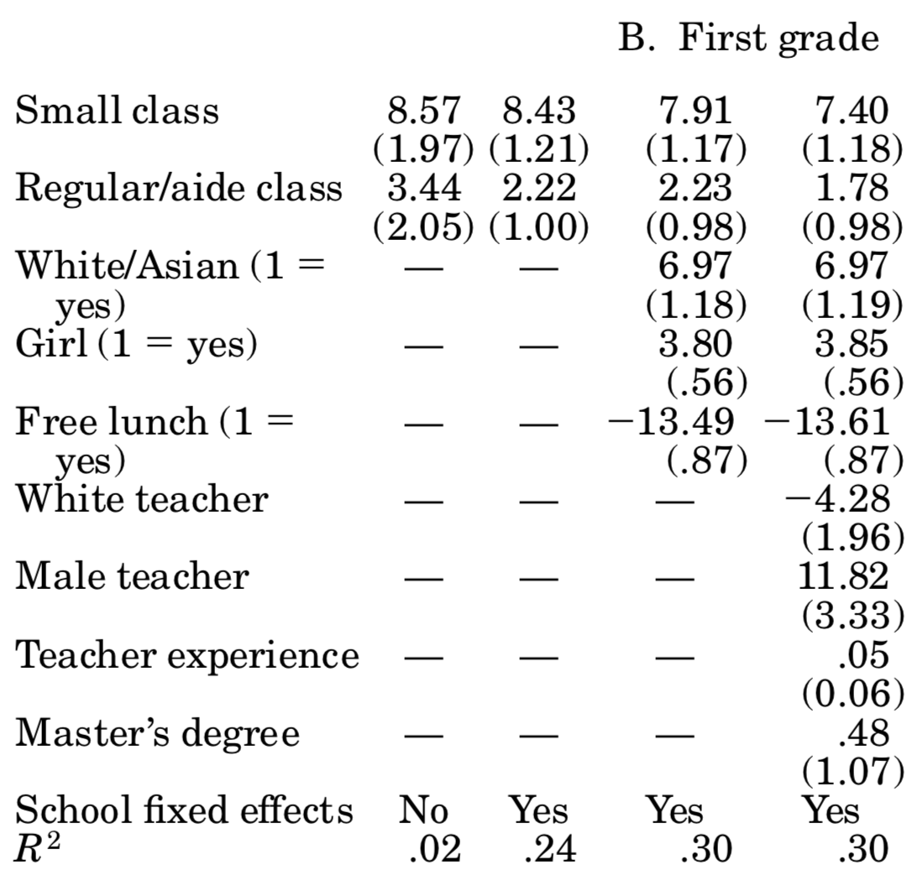
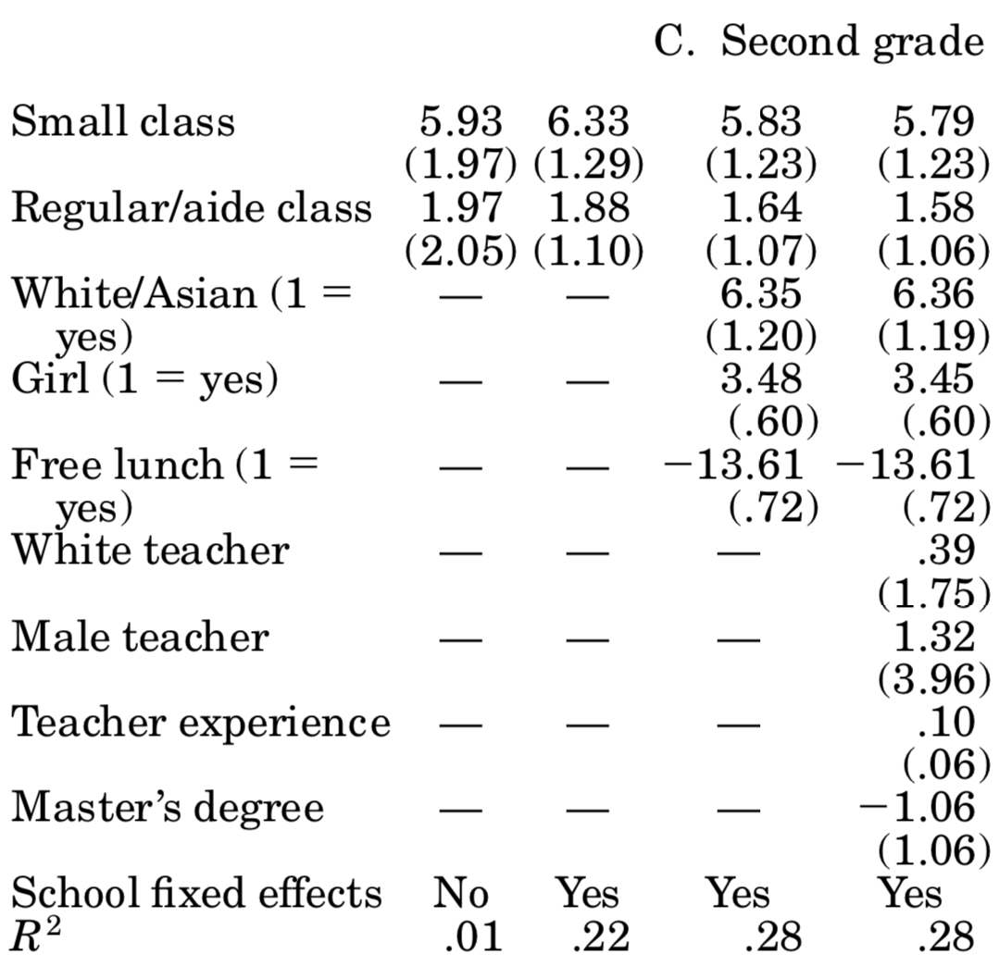
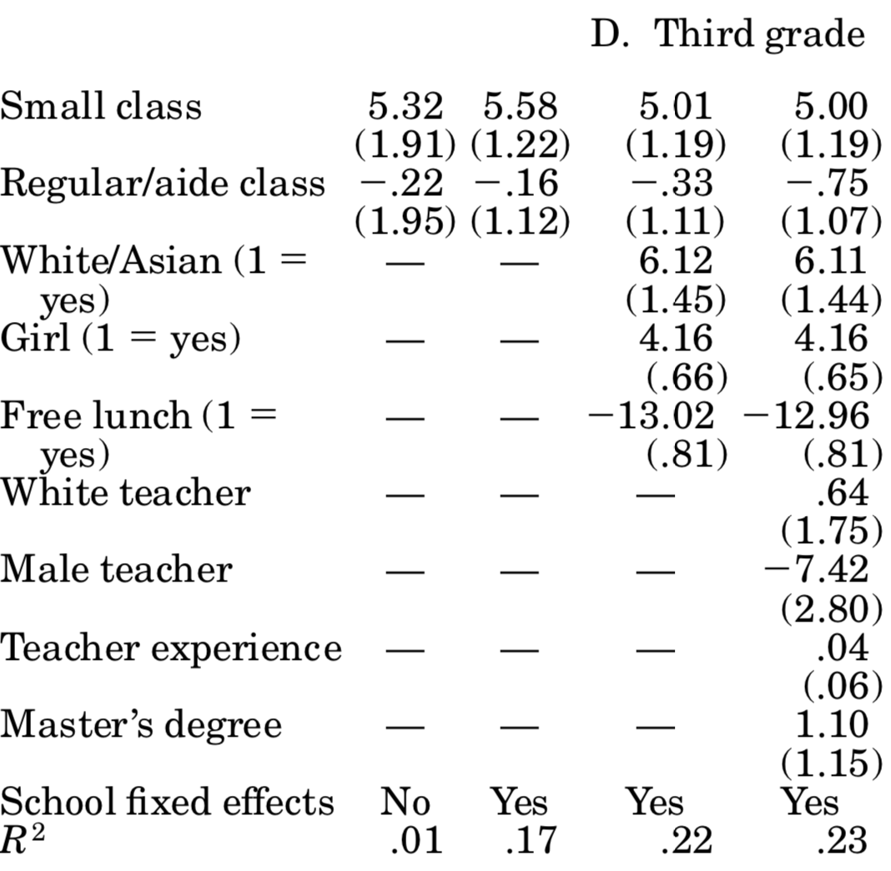

10 STAR Experiment
How to best allocate spending on schooling is an important question. What’s the impact of spending money to finance smaller classrooms on student performance and outcomes, both in the short and in the long run? A vast literature in economics is concerned with this question, and for a long time there was no consensus.
The big underlying problem in answering this question is that we do not really know how student outcomes are produced. In other words, what makes a successful student? Is it the quality of their teacher? Surely matters. is it quality of the school building? Could be. Is it that the other pupils are of high quality and this somehow rubs off to weaker pupils? Also possible. What about parental background? Sure. You see that there are many potential channels that could determine student outcomes. What is more, there could be several interdependencies amongst those factors. Here’s a DAG!
We will look at an important paper in this literature now, which used a randomized experiment to make some substantial progress in answering the question what is the production function for student outcomes. We will study Krueger (1999), which analyses the Tennessee Student/Teacher Achievement Ratio Experiment, STAR in short.
10.1 The STAR Experiment
Starting in 1985-1986 and lasting for four years, young pupils starting Kindergarden and their teachers where randomly allocated to to several possible groups:
- small classes with 13-17 students
- regular classes with 22-25 students
- regular classes with 22-25 students but with an additional full-time teaching aide.
The experiment involved about 6000 students per year, for a total of 11,600 students from 80 schools. Each school was required to have at least on class of each size-type above, and random assignment happened at the school level. At the end of each school grade (kindergarden and grades 1 thru 3) the pupils were given a standardized test. Now, looking back at Figure 10.1, what are the complications when we’d like to assess the impact of class size on student outcome? Put differently, why can’t we just look at observational data of all schools (absent any experiment!), group classes by their size, and compute the mean outcomes for each group? Here is a short list:
- There is selection into schools with different sized classes. Suppose parents have a prior that smaller classes are better - they will try to get their kids into those schools.
- Relatedly, who ends up being in the classroom with a child could matter (peer effects). So, if high quality kids are sorting into schools with small classes, and if peer effects are strong, we could concluded that small classes improved student outcomes when in reality this was due to the high quality of peers in class.
- Also related, teachers could sort towards schools with smaller classes because it’s easier to teach a small rather than a large class, and if there is competition for those places, higher quality teachers will have an advantage.
Now, what can STAR do for us here? There will still be selection into schools, however, once selected a school it is random whether one ends up in a small or a large class. So, the quality of peers present in the school (determined before the experiment through school choice) will be similar across small and big groups. In Figure 10.1, you see that some factors are drawn as unobserved (dashed arrow), and some are observed (solid). In any observational dataset, the dashed arrows would be really troubling. Here, given randomisation into class sizes, we don’t care whether those factors are unobserved or not: It’s reasonable to assume that across randomly assigned groups, the distributions of each of those factors is roughly constant! If we can in fact proxy some of those factors (suppose we had data on teacher qualifications), even better, but not necessary to identify the causal effect of class size.
10.2 PO as Regression
Before we start replicating the findings in Krueger (1999), let’s augment our potential outcomes (PO) notation from the previous chapter. To remind you, we define the PO model as:
Y_i = D_i Y_i^1 + (1-D_i)Y_i^0 \tag{10.1}
and we define the treatment effect of individual i as:
\delta_i = Y_i^1 - Y_i^0. \tag{10.2}
Now, as a start, let’s assume that the treatment effect of small class is identical for all i: in that case we have
\delta_i = \delta ,\forall i
Next, let’s distribute the Y_i^0 in Equation 10.1 as follows:
\begin{align*} Y_i &= Y_i^0 + D_i (Y_i^1 - Y_i^0 )\\ &= Y_i^0 + D_i \delta \end{align*}
finally, let’s add E[Y_i^0] - E[Y_i^0]=0 to the RHS of that last equation to get
Y_i = E[Y_i^0] + D_i \delta + Y_i^0 - E[Y_i^0]
which we can rewrite in our well-known regression format
Y_i = b_0 + \delta D_i + u_i \tag{10.3}
In that formulation, the first E[Y_i^0] is the average non-treatment outcome, which we could regard as some sort of baseline - i.e. our intercept. \delta is the coefficient on the binary treatment indicator. The random deviation Y_i^0 - E[Y_i^0] is the residual u. Under only very specific circumstances will the OLS estimator \hat{\delta} identify the true Average Treatment Effect \delta^{ATE}. Random assignment ensures that the crucial assumption E[u|D] = E[Y_i^0 - E[Y_i^0]|D] = E[Y_i^0|D] - E[Y_i^0] = 0, in other words, there is no difference in nontreatment outcomes across treatment groups. Additionally, we could easily include regressors X_i in Equation 10.3 to account for additional variation in the outcome.
With that out of the way, let’s write down the regression that Krueger (1999) wants to estimate. Equation (2) in his paper reads like this:
Y_{ics} = \beta_0 + \beta_1 \text{small}_{cs} + \beta_2 \text{REG/A}_{cs} + \beta_3 X_{ics} + \alpha_s + \varepsilon_{ics} \tag{10.4}
where i indexes pupil, c is class id and s is the school id. \text{small}_{cs} and \text{REG/A}_{cs} are both dummy variables equal to one if class c in school s is either small, or regular with aide. X_{ics} contains student specific controls (like gender). Importantly, given that randomization was at the school level, we control for the identify of the school with a school fixed effect \alpha_s.
Before we proceed to run this regression, we need to define the outcome variable Y_{ics}. Krueger (1999) combines the various SAT test scores in an average score for each student in each grade. However, given that the SAT scores are on different scales, he first computes a ranking of all scores for each subject (reading or math), and then assigns to each student their percentile in the rank distribution. The highest score is 100, the lowest score is 0.
10.3 Implementing STAR
Let’s start with computing the ranking of grades. Let’s load the data and the data.table package:
data("STAR", package = "AER")
library(data.table)Warning: package 'data.table' was built under R version 4.5.2x = as.data.table(STAR)
x gender ethnicity birth stark star1 star2
<fctr> <fctr> <yearqtr> <fctr> <fctr> <fctr>
1: female afam 1979.50 <NA> <NA> <NA>
2: female cauc 1980.00 small small small
3: female afam 1979.75 small small regular+aide
4: male cauc 1979.75 <NA> <NA> <NA>
5: male afam 1980.00 regular+aide <NA> <NA>
---
11594: male cauc 1979.50 small small small
11595: female cauc 1980.50 regular regular regular
11596: male cauc 1980.00 <NA> regular regular
11597: female afam 1980.00 regular regular+aide regular
11598: male afam 1980.25 regular+aide regular+aide regular+aide
star3 readk read1 read2 read3 mathk math1 math2 math3 lunchk
<fctr> <int> <int> <int> <int> <int> <int> <int> <int> <fctr>
1: regular NA NA NA 580 NA NA NA 564 <NA>
2: small 447 507 568 587 473 538 579 593 non-free
3: regular+aide 450 579 588 644 536 592 579 639 non-free
4: small NA NA NA 686 NA NA NA 667 <NA>
5: <NA> 439 NA NA NA 463 NA NA NA free
---
11594: small 483 590 650 675 559 584 648 678 non-free
11595: regular 437 533 586 654 513 557 611 651 free
11596: regular NA 571 604 595 NA 557 620 672 <NA>
11597: regular+aide 431 475 542 624 478 486 541 610 free
11598: regular+aide 421 468 571 580 449 486 568 577 non-free
lunch1 lunch2 lunch3 schoolk school1 school2 school3
<fctr> <fctr> <fctr> <fctr> <fctr> <fctr> <fctr>
1: <NA> <NA> free <NA> <NA> <NA> suburban
2: free non-free free rural rural rural rural
3: <NA> non-free non-free suburban suburban suburban suburban
4: <NA> <NA> non-free <NA> <NA> <NA> rural
5: <NA> <NA> <NA> inner-city <NA> <NA> <NA>
---
11594: non-free non-free non-free rural rural rural rural
11595: free free free rural rural rural rural
11596: non-free non-free non-free <NA> suburban suburban suburban
11597: free free free inner-city inner-city inner-city inner-city
11598: free free non-free inner-city inner-city inner-city inner-city
degreek degree1 degree2 degree3 ladderk ladder1 ladder2
<fctr> <fctr> <fctr> <fctr> <fctr> <fctr> <fctr>
1: <NA> <NA> <NA> bachelor <NA> <NA> <NA>
2: bachelor bachelor bachelor bachelor level1 level1 apprentice
3: bachelor master bachelor bachelor level1 probation level1
4: <NA> <NA> <NA> bachelor <NA> <NA> <NA>
5: bachelor <NA> <NA> <NA> probation <NA> <NA>
---
11594: bachelor master master master level1 level1 level3
11595: bachelor bachelor bachelor bachelor probation level1 apprentice
11596: <NA> bachelor bachelor bachelor <NA> probation level1
11597: bachelor bachelor bachelor master level1 level1 level1
11598: bachelor bachelor bachelor master <NA> level1 level1
ladder3 experiencek experience1 experience2 experience3 tethnicityk
<fctr> <int> <int> <int> <int> <fctr>
1: level1 NA NA NA 30 <NA>
2: apprentice 7 7 3 1 cauc
3: level1 21 32 4 4 cauc
4: level1 NA NA NA 10 <NA>
5: <NA> 0 NA NA NA cauc
---
11594: level1 8 13 15 17 cauc
11595: notladder 0 7 1 7 cauc
11596: level1 NA 0 8 22 <NA>
11597: probation 24 27 7 12 afam
11598: level1 2 10 14 33 cauc
tethnicity1 tethnicity2 tethnicity3 systemk system1 system2 system3
<fctr> <fctr> <fctr> <fctr> <fctr> <fctr> <fctr>
1: <NA> <NA> cauc <NA> <NA> <NA> 22
2: cauc cauc cauc 30 30 30 30
3: afam afam cauc 11 11 11 11
4: <NA> <NA> cauc <NA> <NA> <NA> 6
5: <NA> <NA> <NA> 11 <NA> <NA> <NA>
---
11594: cauc cauc cauc 21 21 21 21
11595: cauc cauc cauc 33 33 33 33
11596: cauc cauc cauc <NA> 25 25 25
11597: afam afam cauc 11 11 11 11
11598: cauc cauc afam 11 11 11 11
schoolidk schoolid1 schoolid2 schoolid3
<fctr> <fctr> <fctr> <fctr>
1: <NA> <NA> <NA> 54
2: 63 63 63 63
3: 20 20 20 20
4: <NA> <NA> <NA> 8
5: 19 <NA> <NA> <NA>
---
11594: 49 49 49 49
11595: 67 67 67 67
11596: <NA> 58 58 58
11597: 22 22 22 22
11598: 32 32 32 32It’s a bit unfortunate to switch to data.table, but I haven’t been able to do what I wanted in dplyr :-( . Ok, here goes. First thing, you can see that this data set is wide. First thing we want to do is to make it long, i.e. reshape it so that if has 4 ID columns, and several measurements columns thereafter. First, let’s add a studend ID:
x[ , ID := 1:nrow(x)] # add a column called `ID`# `melt` a data.table means to dissolve it and reassamble for some ID variables
mx = melt.data.table(x,
id = c("ID","gender","ethnicity","birth"),
measure.vars = patterns("star*","read*","math*", "schoolid*",
"degree*","experience*","tethnicity*","lunch*"),
value.name = c("classtype","read","math","schoolid","degree",
"experience","tethniticy","lunch"),
variable.name = "grade")
levels(mx$grade) <- c("stark","star1","star2","star3") # reassign levels to grade factor
mx[,1:8] # show first 8 cols ID gender ethnicity birth grade classtype read math
<int> <fctr> <fctr> <yearqtr> <fctr> <char> <int> <int>
1: 1 female afam 1979.50 stark <NA> NA NA
2: 2 female cauc 1980.00 stark small 447 473
3: 3 female afam 1979.75 stark small 450 536
4: 4 male cauc 1979.75 stark <NA> NA NA
5: 5 male afam 1980.00 stark regular+aide 439 463
---
46388: 11594 male cauc 1979.50 star3 small 675 678
46389: 11595 female cauc 1980.50 star3 regular 654 651
46390: 11596 male cauc 1980.00 star3 regular 595 672
46391: 11597 female afam 1980.00 star3 regular+aide 624 610
46392: 11598 male afam 1980.25 star3 regular+aide 580 577You can see here that for example pupil ID=1 was not present in kindergarden, but joined later. We will only keep complete records, hence we drop those NAs:
mx <- mx[complete.cases(mx)]
mx[ID==2] # here is pupil number 2 ID gender ethnicity birth grade classtype read math schoolid
<int> <fctr> <fctr> <yearqtr> <fctr> <char> <int> <int> <char>
1: 2 female cauc 1980 stark small 447 473 63
2: 2 female cauc 1980 star1 small 507 538 63
3: 2 female cauc 1980 star2 small 568 579 63
4: 2 female cauc 1980 star3 small 587 593 63
degree experience tethniticy lunch
<char> <int> <char> <char>
1: bachelor 7 cauc non-free
2: bachelor 7 cauc free
3: bachelor 3 cauc non-free
4: bachelor 1 cauc freeOk, now on to standardizing those read and math scores. you can see they are on their kind of arbitrary SAT scales
mx[,range(read)][1] 315 775First thing to do is to create an empirical cdf of each of those scores within a certain grade. That is the ranking of scores from 0 to 1:
setkey(mx, classtype) # key mx by class type
ecdfs = mx[classtype != "small", # subset data.table to this
list(readcdf = list(ecdf(read)), # create cols readcdf and mathcdf
mathcdf = list(ecdf(math))
),
by = grade] # by grade
# let's look at those cdf!
om = par("mar")
par(mfcol=c(4,2),mar = c(2,om[2],2.5,om[4]))
ecdfs[,.SD[,plot(mathcdf[[1]],main = paste("math ecdf grade",.BY))],by = grade]
ecdfs[,.SD[,plot(readcdf[[1]],main = paste("read ecdf grade",.BY))],by = grade]
par(mfcol=c(1,1),mar = om)You can see here how the cdf maps SAT scores (650, for example), into the interval [0,1]. Now, in the ecdfs data.table object, the readcdf column contains a function (a cdf) for each grade. We can evaluate the observed test scores for each student in that function to get their ranking in [0,1], by grade:
setkey(ecdfs, grade) # key ecdfs according to `grade`
setkey(mx,grade)
z = mx[ , list(ID,perc_read = ecdfs[(.BY),readcdf][[1]](read),
perc_math = ecdfs[(.BY),mathcdf][[1]](math)),
by=grade] # stick `grade` into `ecdfs` as `.BY`
z[,score := rowMeans(.SD)*100, .SDcols = c("perc_read","perc_math")] # take average of scores
# and multiply by 100, so it's comparable to Krueger
# merge back into main data
mxz = merge(mx,z,by = c("grade","ID"))
# make a plot
ggplot(data = mxz, mapping = aes(x = score,color=classtype)) + geom_density() + facet_wrap(~grade) + theme_bw()
You can compare Figure 10.2 to Krueger (1999) figure 1. You can see that the density estimates are almost identical, the discrepancy comes mainly from the fact that we split the regular classes also by with/without aide.

So far, so good! Now we can move to run a regression and estimate Equation 10.4.
# create Krueger's dummy variables
mxz = as_tibble(mxz) %>%
mutate(small = classtype == "small",
rega = classtype == "regular+aide",
girl = gender == "female",
freelunch = lunch == "free")
# reproduce columns 1-3
m1 = mxz %>%
group_by(grade) %>%
do(model = lm(score ~ small + rega, data = .))
m2 = mxz %>%
group_by(grade) %>%
do(model = lm(score ~ small + rega + schoolid, data = .))
m3 = mxz %>%
group_by(grade) %>%
do(model = lm(score ~ small + rega + schoolid + girl + freelunch, data = .))
# get school id names to omit from regression tables
school_co = grep(names(coef(m2[1,]$model[[1]])),pattern = "schoolid*",value=T)
school_co = c(unique(school_co,grep(names(coef(m3[1,]$model[[1]])),pattern = "schoolid*",value=T)),"schoolid77")Now let’s look at each grade’s models.
h = list()
for (g in unique(mxz$grade)) {
h[[g]] <- huxtable::huxreg(subset(m1,grade == g)$model[[1]],
subset(m2,grade == g)$model[[1]],
subset(m3,grade == g)$model[[1]],
omit_coefs = school_co,
statistics = c(N = "nobs", R2 = "r.squared"),
number_format = 2
) %>%
huxtable::insert_row(c("School FE","No","Yes","Yes"),after = 11) %>%
huxtable::theme_article() %>%
huxtable::set_caption(paste("Estimates for grade",g)) %>%
huxtable::set_top_border(12, 1:4, 2)
}
h$stark| (1) | (2) | (3) | |
|---|---|---|---|
| (Intercept) | 51.44 *** | 58.49 *** | 60.20 *** |
| (0.61) | (2.92) | (2.83) | |
| smallTRUE | 4.84 *** | 5.59 *** | 5.53 *** |
| (0.89) | (0.79) | (0.76) | |
| regaTRUE | -0.19 | 0.29 | 0.41 |
| (0.86) | (0.76) | (0.73) | |
| girlTRUE | 4.77 *** | ||
| (0.60) | |||
| freelunchTRUE | -14.29 *** | ||
| (0.72) | |||
| School FE | No | Yes | Yes |
| N | 5723 | 5723 | 5723 |
| R2 | 0.01 | 0.25 | 0.31 |
| *** p < 0.001; ** p < 0.01; * p < 0.05. | |||
h$star1| (1) | (2) | (3) | |
|---|---|---|---|
| (Intercept) | 49.43 *** | 53.84 *** | 56.95 *** |
| (0.56) | (2.45) | (2.39) | |
| smallTRUE | 8.37 *** | 8.31 *** | 7.87 *** |
| (0.85) | (0.75) | (0.72) | |
| regaTRUE | 3.38 *** | 2.00 ** | 2.07 ** |
| (0.82) | (0.73) | (0.71) | |
| girlTRUE | 3.07 *** | ||
| (0.58) | |||
| freelunchTRUE | -14.45 *** | ||
| (0.68) | |||
| School FE | No | Yes | Yes |
| N | 6225 | 6225 | 6225 |
| R2 | 0.02 | 0.26 | 0.32 |
| *** p < 0.001; ** p < 0.01; * p < 0.05. | |||
h$star2| (1) | (2) | (3) | |
|---|---|---|---|
| (Intercept) | 49.75 *** | 65.02 *** | 66.68 *** |
| (0.61) | (2.79) | (2.72) | |
| smallTRUE | 6.19 *** | 6.68 *** | 6.23 *** |
| (0.89) | (0.81) | (0.78) | |
| regaTRUE | 2.22 ** | 2.02 ** | 1.85 * |
| (0.85) | (0.77) | (0.74) | |
| girlTRUE | 3.44 *** | ||
| (0.61) | |||
| freelunchTRUE | -14.49 *** | ||
| (0.73) | |||
| School FE | No | Yes | Yes |
| N | 5704 | 5704 | 5704 |
| R2 | 0.01 | 0.23 | 0.29 |
| *** p < 0.001; ** p < 0.01; * p < 0.05. | |||
h$star3| (1) | (2) | (3) | |
|---|---|---|---|
| (Intercept) | 50.87 *** | 45.90 *** | 49.15 *** |
| (0.66) | (2.66) | (2.63) | |
| smallTRUE | 4.96 *** | 5.19 *** | 4.61 *** |
| (0.91) | (0.86) | (0.83) | |
| regaTRUE | -0.08 | 0.03 | -0.21 |
| (0.88) | (0.82) | (0.80) | |
| girlTRUE | 3.19 *** | ||
| (0.64) | |||
| freelunchTRUE | -13.30 *** | ||
| (0.76) | |||
| School FE | No | Yes | Yes |
| N | 5715 | 5715 | 5715 |
| R2 | 0.01 | 0.19 | 0.23 |
| *** p < 0.001; ** p < 0.01; * p < 0.05. | |||
You should compare those to table 5 in Krueger (1999), where it says OLS: actual class size. For the most part, we come quite close to his esimates! We did not follow his more sophisticated error structure (by allowing errors to be correlated at the classroom level), and we seem to have different number of individuals in each year. Here is his table 5:




Note
So, based on those results we can say that attending a small class raises student’s test scores by about 5 percentage points. Unfortunately, says Krueger (1999), is it hard to gauge whether those are big or small effects: how important is it to score 5% more or less? Well, you might say, it depends how close you are to an important cutoff value (maybe entrance to the next school level requires a score of x, and the 5% boost would have made that school feasible). Be that as it may, now you know more about one of the most influential papers in education economics, and why using an experimental setup allowed it to achieve credible causal estimates.